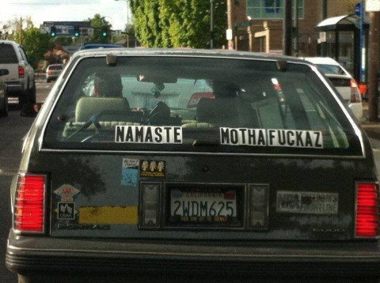

This being a person thing …
It’s kind of a pain in the ass.
I mean, sure Judy’s cute and all. :)
But she’s also prone to inconvenient thoughts and feelings, bodily functions that have a mind of their own, graying hair and wrinkles, and frequent desires for French fries.
You may notice your own list of Wish-it-was-differents.
Perhaps you’re reactive, poor, selfish, alone. Or lazy, irresponsible, addicted, weak.
The personality has likes, dislikes and inconvenient desires.
Which, as every card-carrying spiritual seeker knows, is…
Not How It Should Be.
Yeah, these human thingys are…
Flawed.
And that, of course, is…
Just wrong.
But….
How to do existence without ego?
How does one get so enlightened that one “dies”, loses the personality, blisses out forever…
And disappears?
Yeah.
Interesting concept, that.
One that drives so many mythed-out seekers into overheated overdrive of failure and They-have-something-I-don’t-have- itis.
But still… a concept.
Perhaps even a delusion.
Because nobody can kill a personality.
And though yes I realize I’m opening the door here to the Correcters Of All That's Right and Holy…
(Oh hey come on in, friends. )
Still, we can’t kill what isn’t alive to begin with.
Maybe looking for ourselves, we can see the myth in this idea that we can get so enlightened that we lose the person.
Because what would be left without it?
No one turns into a puff of smoke and disappears.
“I don’t know what happened, Officer. She was right here a minute ago. And then she cried, “Aha!” and …vanished!”
Besides, ego, personality, person….
Those are concepts too.
And those also are not alive, also not things.
So they may indeed appear to come, go or disappear.
But they’re still a bunch nothing.
And how can nothing die?
Plus, that personality…
Where’s it gonna go?
Rome? Mars? Next door to the sucker who doesn’t know about enlightenment?
Nah.
It’ll still be here to tie our shoes, pet the dog and drive on the correct side of the road.
Why shouldn’t it be?
Even though simultaneously…
as in – at the same time-
We may indeed come to see that we’re not that personality, that it’s an act, a shell game, a pretend.
A trick of mind.
And along with that seeing may come some quite nice feelings.
Feelings we like.
Which are experienced by …
Oh.
The personality.
I mean, how exactly could consciousness be conscious, what would it be conscious of…
Without ego, personality, person?
Yeah.
We can’t kill off the person.
It's needed.
Even though it might be hard work and downright painful…
Maintaining these characters...
Still, they’re not going anywhere.
We have to learn to work with them…
As they are.
Without trying to beat them into well-behaved acceptable boxes.
Because yes, even spiritual boxes are still boxes.
So mind-ego-personality may have its flaws and preferences.
And it may have its fix-Me-upper projects.
But where would we be without them?
Nowhere, man.
Namaste.
See Ya Later, Ego
